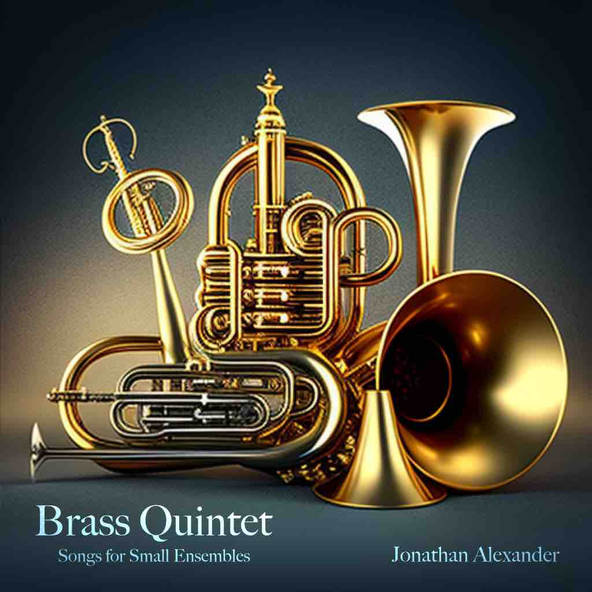
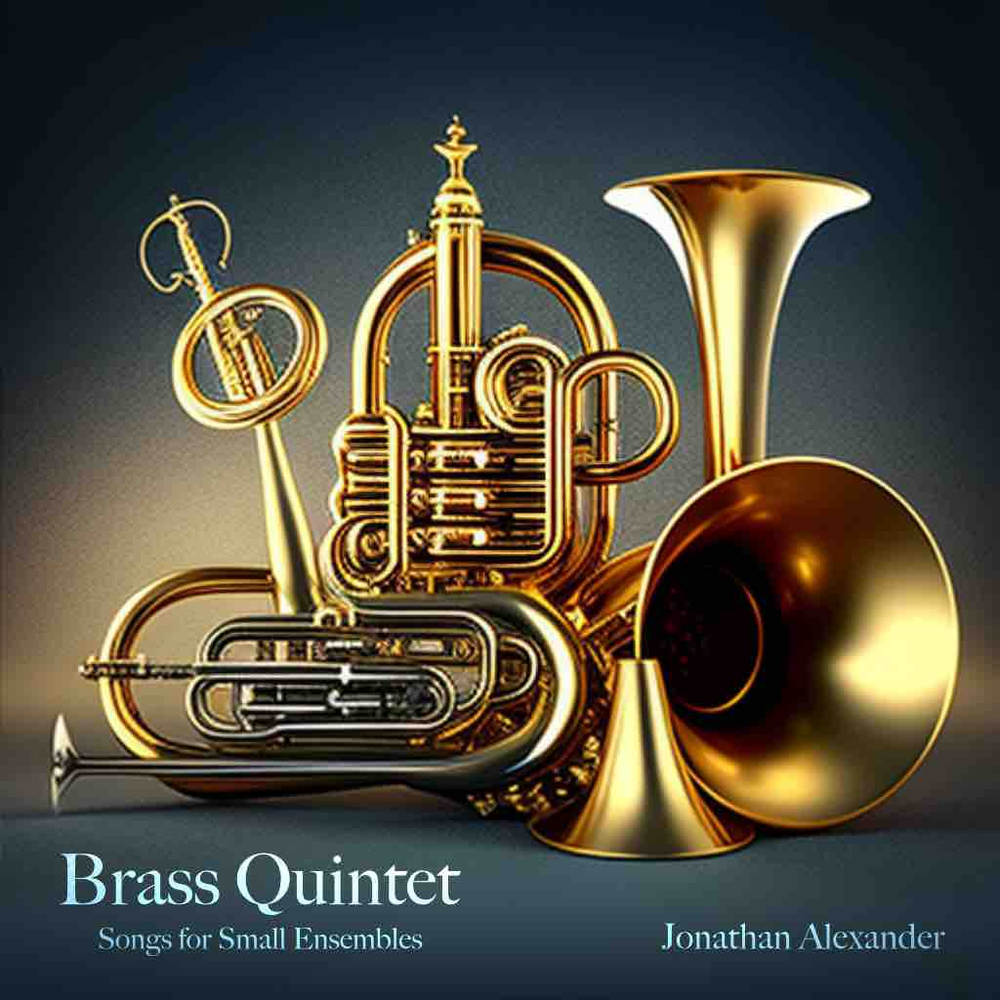

嗨，我叫智海！我是一位加拿大作曲家、多樂器演奏者和受過古典爵士訓練的音樂家，我的血統包括廣東和蘇格蘭...
嗨，我叫智海！我是一位加拿大作曲家、多樂器演奏者和受過古典爵士訓練的音樂家，我的血統包括廣東和蘇格蘭...
我的音樂之旅始於五歲時，在皇家音樂學院裡嚴格訓練古典鋼琴，培養出對技術性的敏銳感。然而，在叛逆的十幾歲時，我對古典音樂世界的不耐煩讓我偶然發現了即興爵士的世界，因此我成為一個自主退出的音樂學院學生，渴望探索新形式的音樂。
隨後的幾年成為一段多元文化的音樂之旅：從學習日本融合爵士鋼琴，突然轉向指彈和佛朗明哥吉他；再從學習傳統中國二胡到製作嘻哈節拍和掌握數位音頻製作。換言之，我正在發展成為一個音樂多語者。
至於作曲，我的旅程始於溫哥華的不列顛哥倫比亞大學。起初我報讀的是計算機科學專業，然而，加入一個遊戲開發俱樂部後，我立即發現了為互動媒體配樂的樂譜，於是我決定全職學習音樂。最終我定居於萊斯布里奇大學，這所謙遜的學校給予了我租借和學習管弦樂團中每一種樂器的自由，從而滋養了我對多樂器的熱愛。
在學期間，我繼續為屢獲殊榮的學生遊戲和動畫進行配樂，同時在Dr. Arlan N. Schultz的指導下接受音樂會音樂的訓練。
在我每天進行四十小時的音樂練習之餘，我喜歡攀爬岩石、進行體操翻筋斗，並設計機器來執行我的指。
(^-^)


 
